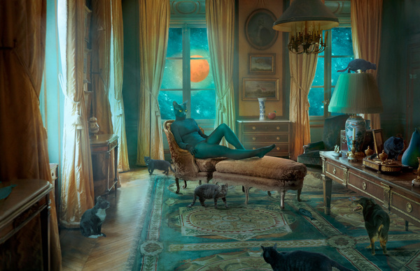
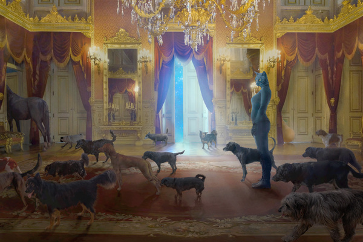
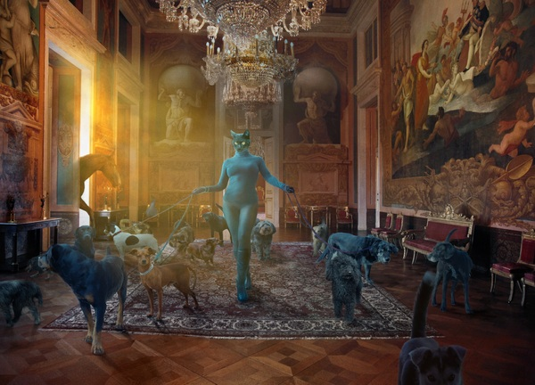
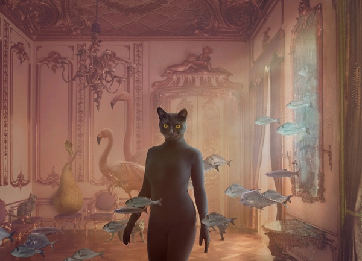
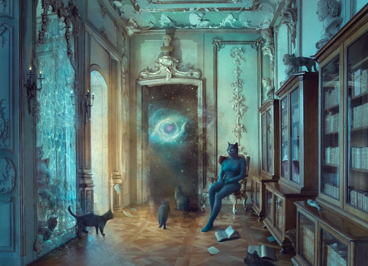
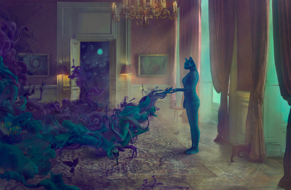
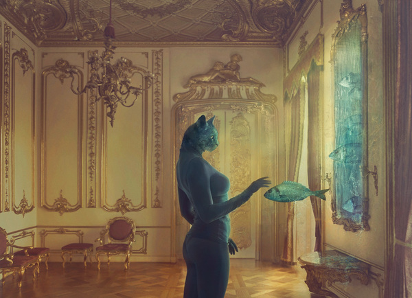

Many Faces of the Cat
This is no ordinary feline. Once a woman, she now lives with the gifts and burdens of nine lives—some wasted, others filled with grace—all part of her quest to find her path.
Along the way, she’s met intriguing companions: dogs, horses, fish, and other cats. Some remain, some reappear, and others are lost forever. In her lifetimes, she’s endured gloom and
traveled the universe in search of the lost Pear,
meeting figures like Mr. Dark, who taught her to see in darkness. Bright stars, too, have guided her, revealing new paths.
Among her connections is a special fish, one of many that glide through her palace. Yet, her instincts as a hunter create an ongoing struggle, and though she wields feline powers,
she misses her humanity, knowing her transformation cost her something precious—her heart.
Through despair and joy, light and shadow, she carries her Pear across the cosmos, a constant reminder of her resilience and transformation.
Her story spans nine lives, full of encounters, struggles, and a search for meaning among the stars.







